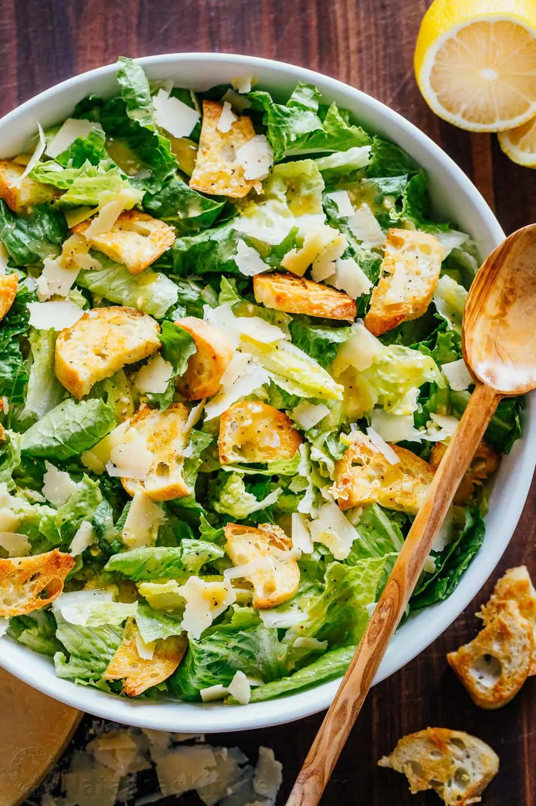

Classic Caesar Salad
- Total time30 mins
- Serves4
- Ingredients14
- Steps7

Ingredients
For the homemade croutons
- 1/2 French Baguette, cut in half and thinly sliced (1/4" thick)
- 3 Tbsp extra virgin olive oil
- 1 tsp minced garlic, 2 small cloves
- 2 Tbsp grated parmesan cheese
For the dressing
- 2 small garlic cloves, minced (1 tsp)
- 2 tsp dijon mustard
- 1 tsp Worcestershire sauce
- 2 tsp fresh lemon juice
- 1 1/2 tsp red wine vinegar
- 1/3 cup extra virgin olive oil
- 1/2 tsp sea salt, or to taste
- 1/8 tsp black pepper, plus more to serve
For the salad
- 1 large romaine lettuce, (or 2 small heads romaine)
- 1/3 cup parmesan cheese, shredded or shaved
Directions
How to make the croutons
- Preheat oven to 350˚F. Cut the baguette in half lengthwise through the top of the baguette then slice diagonally into 1/4" thick pieces. Place the breads onto a baking sheet.
- In a small bowl, combine 3 Tbsp extra virgin olive oil and 1 tsp of finely minced garlic. Drizzle the garlic oil over the croutons and sprinkle the top with 2 Tbsp grated parmesan cheese.
- Toss until evenly coated. Spread in a single layer over the baking sheet and bake at 350˚F until light golden and crisp (10-12 minutes), or to desired crispness.
How to make caesar salad dressing
- In a small bowl, whisk together garlic, dijon, Worcestershire, lemon juice and red wine vinegar.
- Slowly drizzle in extra virgin olive oil while whisking constantly.
- Whisk in 1/2 tsp salt and 1/8 tsp black pepper, or season to taste.
How to make the salad
- Rinse, dry and chop or tear the romaine into bite-sized pieces. Place in a large serving bowl and sprinkle generously with shredded parmesan cheese and cooled croutons. Drizzle with caesar dressing and toss gently until lettuce is evenly coated.
Recipe credit: natashaskitchen.com